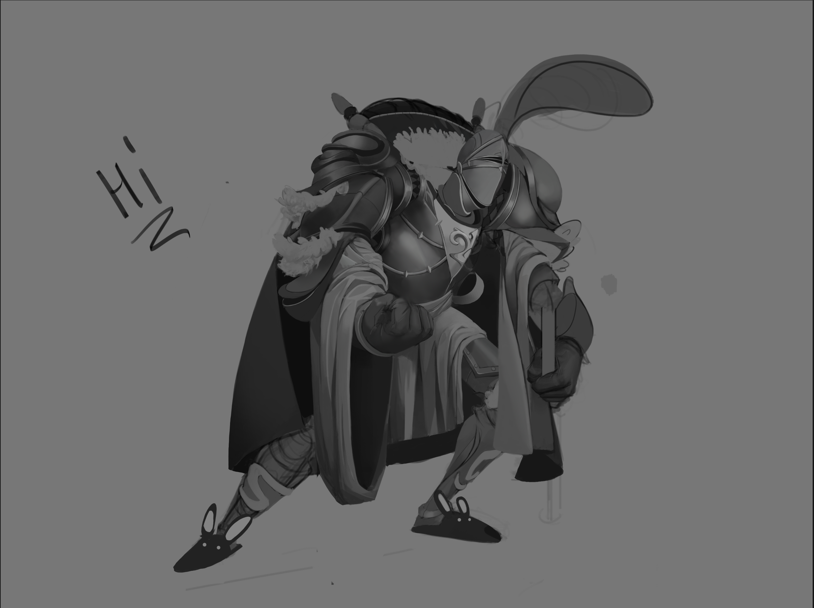
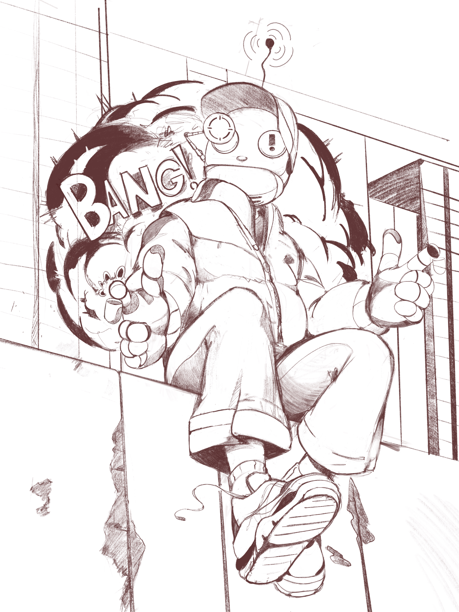

Info about me
Areas of interest
Data Science and Machine Learning
I'm interested in using data analysis and machine learning to find patterns in large and complex data sets, particularly in healthcare and biological applications
Scientific Computing
I'm interested in using programming to model physical systems and create interactive scientific visualizations. I'm currently exploring graphics programming and physics simulation using C++.
Healtchare and Bioinformatics
One of my primary interests is the intersection of computer science and healthcare, including bioinformatics, medical data analysis, and software that can improve patient care.
Languages and Technologies
What I'm Learning
- Web development with HTML, CSS, and JavaScript
- C++ for scientific computing and simulation
- Computer graphics
- Machine learning and feature selection
Main Personal Hobby: Art
Outside of computer science, my main hobby is digital illustration and character art

